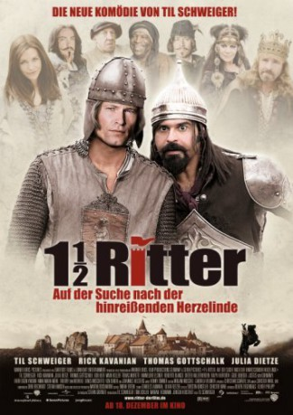

#44 Eineinhalb Ritter
Alternativ: 1 1/2 Ritter - Auf der Suche nach der hinreißenden Herzelinde
 
 IMDB-Wertung: 3.6 / 10
IMDB-Wertung: 3.6 / 10  Metascore: 0
Metascore: 0 
Neulich im Mittelalter: Das Geschäft mit Markenrüstungen, Minnesänger-Casting, Ride-Ins und Leibeigenen-Gleitzeit boomt. Um da noch ehrenwert zu bleiben, beschließt Ritter Lanze mit dem türkischen Hochstapler Erdal die Tochter von König Gunther zu befreien. Schon bald müssen die wackeren Recken erkennen, dass sie bei ihrer Suche nach Herzelinde einem Komplott aufgesessen sind.
Jahr: 2008
Dauer: 115 Minuten
FSK: 6
Land: Deutschland Studio: Warner Bros.Tonspuren:
Untertitel:
Auflösung: 720p (1280×544) Größe: 4474 MB
Genre: Komödie
Regisseur:  Til Schweiger, Torsten Künstler, Christof Wahl
Til Schweiger, Torsten Künstler, Christof Wahl
Drehbuch: Oliver Ziegenbalg, Oliver Philipp
Soundtrack: Stefan Hansen, Dirk Reichardt, Martin Todsharow
Darsteller:
Datei: X:\2008(A-F)\Eineinhalb Ritter (2008, FSK6, 1280x544).mkv seit 02.02.2015
Festplatte: HD 2007(A-Z)-2008(A-F)
 Es gibt insgesamt 66 Filme in der Gruppe '2008(A-F)'
Es gibt insgesamt 66 Filme in der Gruppe '2008(A-F)'